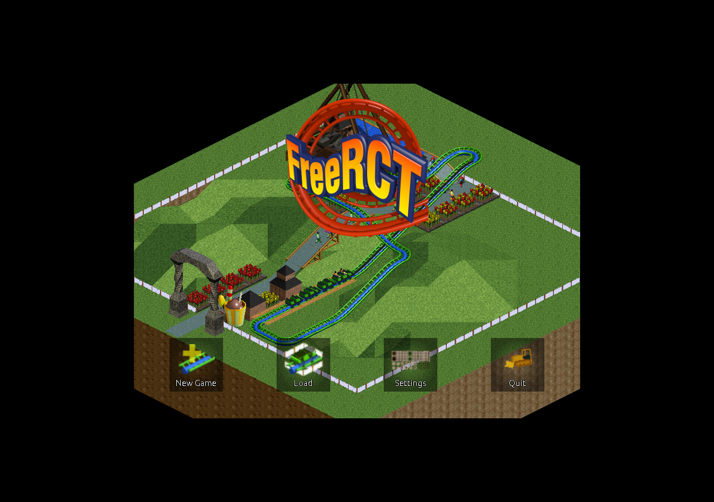

Play Check
PARTIAL
FreeRCT launched offline under offline test mode and produced a non-empty screenshot. First path/ride placement check is still pending.
Detailed test logs are kept for operators.
Open-source theme-park tycoon inspired by RollerCoaster Tycoon, stored from the official 0.1 release.
Native Tycoon - Theme Park Builder - Tycoon, Simulation, Native

PARTIAL
FreeRCT launched offline under offline test mode and produced a non-empty screenshot. First path/ride placement check is still pending.
Detailed test logs are kept for operators.
Official FreeRCT 0.1 Linux amd64 package is stored locally with upstream checksum verification.
Open downloadsFreeRCT aims to provide a free and open source theme-park management game in the spirit of the classic RollerCoaster Tycoon games. This release is early, so treat it as an experimental tycoon option rather than a finished replacement.
Source: https://freerct.net/
No bundled PDF manual was found in the 0.1 Debian package. The hub therefore carries only quick-start notes until a better local manual/wiki mirror is prepared.